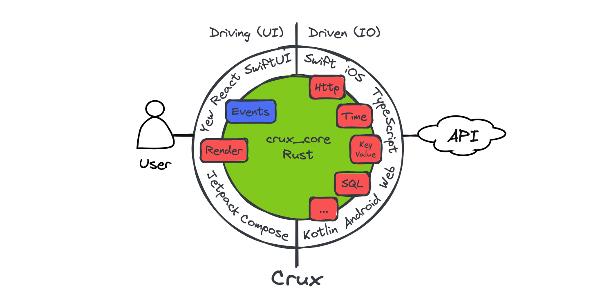
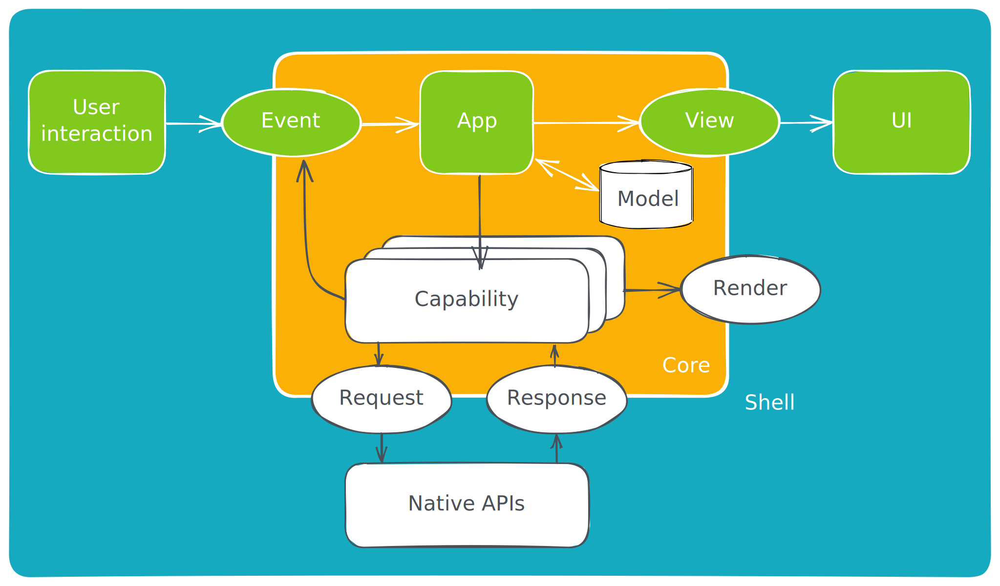

Overview
Crux is an experimental approach to building cross-platform applications with better testability, higher code and behaviour reuse, better safety, security, and more joy from better tools.
It splits the application into two distinct parts, a Core built in Rust, which drives as much of the business logic as possible, and a Shell, built in the platform native language (Swift, Kotlin, TypeScript), which provides all interfaces with the external world, including the human user, and acts as a platform on which the core runs.

The interface between the two is a native FFI (Foreign Function Interface) with cross-language type checking and message passing semantics, where simple data structures are passed across the boundary.
To get playing with Crux quickly, follow the Getting Started steps. If you prefer to read more about how apps are built in Crux first, read the Development Guide. And if you'd like to know what possessed us to try this in the first place, read about our Motivation.
There are two places to find API documentation: the latest published version on docs.rs, and we also have the very latest master docs if you too like to live dangerously.
- crux_core - the main Crux crate: latest release | latest master
- crux_http - HTTP client capability: latest release | latest master
Crux is open source on Github. A good way to learn Crux is to explore the code, play with the examples, and raise issues or pull requests. We'd love you to get involved.
Design overview

The architecture is event-driven, based on event sourcing. The Core holds the majority of state, which is updated in response to events happening in the Shell. The interface between the Core and the Shell is messaged based.
The user interface layer is built natively, with modern declarative UI frameworks such as Swift UI, Jetpack Compose and React/Vue or a WASM based framework on the web. The UI layer is as thin as it can be, and all other application logic is performed by the shared Core. The one restriction is that the Core is side–effect free. This is both a technical requirement (to be able to target WebAssembly), and an intentional design goal, to separate logic from effects and make them both easier to test in isolation.
The core requests side-effects from the Shell through common capabilities. The basic concept is that instead of doing the asynchronous work, the core describes the intent for the work with data, and passes this to the Shell to be performed. The Shell performs the work, and returns the outcomes back to the Core. This approach is inspired by Elm, and similar to how other purely functional languages deal with effects and I/O (e.g. the IO monad in Haskell). It is also similar to how iterators work in Rust.
The Core exports types for the messages it can understand. The Shell can call the Core and pass one of the messages. In return, it receives a set of side-effect requests to perform. When the work is completed, the Shell sends the result back into the Core, which responds with further requests if necessary.
Updating the user interface is considered one of the side-effects the Core can request. The entire interface is strongly typed and breaking changes in the core will result in build failures in the Shell.
Goals
We set out to prove this architecture to find a better way of building apps across platforms. You can read more about our motivation. The overall goals of Crux are to:
- Build the majority of the application code once, in Rust
- Follow the Onion Architecture to get all its benefits
- Encapsulate the behaviour of the app in the Core for reuse
- Separate the behaviour from the look and feel and interaction design
- Push side-effects to the edge, to make the behaviour of the Core easy to test
- Use the native UI tool kits to create user experience that is the best fit for a given platform
Motivation
We set out to prove this approach to building apps largely because we've seen the drawbacks of all the other approaches in real life, and thought "there must be a better way". The two major available approaches to building the same application for iOS and Android are:
- Build a native app for each platform, effectively doing the work twice.
- Use React Native or Flutter to build the application once1 and produce native looking and feeling apps which behave nearly identically.
The drawback of the first approach is doing the work twice. In order to build every feature for iOS and Android at the same time, you need twice the number of people, either people who happily do Swift and Kotlin (and they are very rare), or more likely a set of iOS engineers and another set of Android engineers. This typically leads to forming two separate, platform-focused teams. We have witnessed situations first-hand, where those teams struggle with the same design problems, and despite one encountering and solving the problem first, the other one can learn nothing from their experience (and that's despite long design discussions).
We think such experience with the platform native approach are common, and the reason why people look to React Native and Flutter. The issues with React Native are two fold
- Only mostly native user interface
- In the case of React Native, the JavaScript ecosystem tooling disaster
React Native effectively takes over, and works hard to insulate the engineer from the native platform underneath and pretend it doesn't really exist, but of course, inevitably, it does and the user interface ends up being built in a combination of 90% JavaScript/TypeScript and 10% Kotlin/Swift. This was still a major win when React Native was first introduced, because the platform native UI toolkits were imperative, following a version of MVC architecture, and generally made it quite difficult to get UI state management right. React on the other hand is declarative, leaving much less space for errors stemming from the UI getting into an undefined state. This benefit was clearly recognised by iOS and Android, and both introduced their own declarative UI toolkit - Swift UI and Jetpack Compose. Both of them are quite good, matching that particular advantage of React Native, and leaving only building things once (in theory). But in exchange, the have to be written in JavaScript (and adjacent tools and languages).
The main issue with the JavaScript ecosystem is that it's built on sand. The underlying language is quite loose and has a lot of inconsistencies. It came with no package manager originally, now it has three. To serve code to the browser, it gets bundled, and the list of bundlers is too long to include here. Webpack, the most popular one is famously difficult to configure. JavaScript was built as a dynamic language which leads to a lot of basic human errors, which are made while writing the code, only being discovered when running the code. Static type systems aim to solve that problem and TypeScript adds this onto JavaScript, but the types only go so far (until they hit an any type, or dependencies with no type definitions), and they disappear at runtime.
In short, upgrading JavaScript to something modern takes a lot of tooling. Getting all this tooling set up and ready to build things is an all day job, and so more tooling, like Next.js has popped up providing this configuration in a box, batteries included. Perhaps the final admission of this problem is the recent Rome tools project, attempting to bring all the various tools under one roof (and Rome itself is built in Rust...).
It's no wonder that even a working setup of all the tooling has sharp edges, and cannot afford to be nearly as strict as tooling designed with strictness in mind, such as Rust's. The heart of the problem is that computers are strict and precise instruments, and humans are sloppy creatures. With enough humans (more than 10, being generous) and no additional help, the resulting code will be sloppy, full of unhandled edge cases, undefined behaviour being relied on, circular dependencies preventing testing in isolation, etc. (and yes, these are not hypotheticals).
Contrast that with Rust, which is as strict as it gets, and generally backs up the claim that if it compiles it will work (and if you struggle to get it past the compiler, it's probably a bad idea). The tooling and package management is built in with cargo. There are fewer decisions to make when setting up a Rust project.
In short, we think the JS ecosystem has jumped the shark, the complexity toothpaste is out of the tube, and it's time to stop. But there's no real viable alternative. Crux is our attempt to provide one.
In reality it's more like 1.4x effort build the same app for two platforms.
Shared core and types
These are the steps to set up the two crates forming the shared core – the core itself, and the shared types crate which does type generation for the foreign languages.
Most of these steps are going to be automated in future tooling, and published as crates. For now the set up is effectively a copy & paste from one of the example projects.
Install the tools
This is an example of a rust-toolchain.toml file, which you can add at the root of your repo. It should ensure that the correct rust channel and compile targets are installed automatically for you when you use any rust tooling within the repo.
[toolchain]
channel = "stable"
components = ["rustfmt", "rustc-dev"]
targets = [
"aarch64-apple-darwin",
"aarch64-apple-ios",
"aarch64-apple-ios-sim",
"aarch64-linux-android",
"wasm32-unknown-unknown",
"x86_64-apple-ios"
]
profile = "minimal"
Create the core crate
The shared library
The first library to create is the one that will be shared across all platforms, containing the behavior of the app. You can call it whatever you like, but we have chosen the name shared here.
You can create the shared rust library, like this:
cargo new --lib shared
The workspace and library manifests
We'll be adding a bunch of other folders into the monorepo, so we are choosing to use Cargo Workspaces. Edit the workspace /Cargo.toml file, at the monorepo root, to add the new library to our workspace. It should look something like this (the package and dependencies fields are just examples):
[workspace]
members = ["shared", "shared_types"]
[workspace.package]
authors = ["Red Badger Consulting Limited"]
edition = "2021"
repository = "https://github.com/redbadger/crux/"
license = "Apache-2.0"
keywords = ["crux", "crux_core", "cross-platform-ui", "ffi", "wasm"]
rust-version = "1.66"
[workspace.dependencies]
anyhow = "1.0.69"
serde = "1.0.152"
The library's manifest, at /shared/Cargo.toml, should look something like the following, but there are a few things to note:
- the
crate-typelibis the default rust library when linking into a rust binary, e.g. in theweb-yew, orcli, variantstaticlibis a static library (libshared.a) for including in the Swift iOS app variantcdylibis a C-ABI dynamic library (libshared.so) for use with JNA when included in the Kotlin Android app variant
- the
pathfields on the crux dependencies are for the examples in the Crux repo and so you will probably not need them - the uniffi dependencies and
uniffi-bindgentarget should make sense after you read the next section
[package]
name = "shared"
version = "0.1.0"
edition = "2021"
rust-version = "1.66"
[lib]
crate-type = ["lib", "staticlib", "cdylib"]
name = "shared"
[dependencies]
crux_core = { version = "0.3", path = "../../../crux_core" }
crux_macros = { version = "0.1", path = "../../../crux_macros" }
serde = { workspace = true, features = ["derive"] }
lazy_static = "1.4.0"
uniffi = "0.23.0"
wasm-bindgen = "0.2.84"
[target.uniffi-bindgen.dependencies]
uniffi = { version = "0.23.0", features = ["cli"] }
[build-dependencies]
uniffi = { version = "0.23.0", features = ["build"] }
FFI bindings
Crux uses Mozilla's Uniffi to generate the FFI bindings for iOS and Android.
Generating the uniffi-bindgen CLI tool
Since Mozilla released version 0.23.0 of Uniffi, we need to also generate the binary that generates these bindings. This avoids the possibility of getting a version mismatch between a separately installed binary and the crate's Uniffi version. You can read more about it here.
Generating the binary is simple, we just add the following to our crate, in a file called /shared/src/bin/uniffi-bindgen.rs.
fn main() { uniffi::uniffi_bindgen_main() }
And then we can build it with cargo.
cargo run -p shared --bin uniffi-bindgen
# or
cargo build
./target/debug/uniffi-bindgen
The uniffi-bindgen executable will be used during the build in XCode and in Android Studio (see the following pages).
The interface definitions
We will need an interface definition file for the FFI bindings. Uniffi has its own file format (similar to WebIDL) that has a .udl extension. You can create one here /shared/src/shared.udl, like this:
namespace shared {
sequence<u8> process_event([ByRef] sequence<u8> msg);
sequence<u8> handle_response([ByRef] sequence<u8> uuid, [ByRef] sequence<u8> res);
sequence<u8> view();
};
There are also a few additional parameters to tell Uniffi how to create bindings for Kotlin and Swift. They live in the file /shared/uniffi.toml, like this (feel free to adjust accordingly):
[bindings.kotlin]
package_name = "com.example.counter.shared"
cdylib_name = "shared"
[bindings.swift]
cdylib_name = "shared_ffi"
omit_argument_labels = true
Scaffolding
Soon we will have macros and/or code-gen to help with this, but for now, we need some scaffolding in /shared/src/lib.rs. You'll notice that we are re-exporting the Request type and the capabilities we want to use in our native Shells, as well as our public types from the shared library.
pub mod app;
pub mod capabilities;
use lazy_static::lazy_static;
use wasm_bindgen::prelude::wasm_bindgen;
use crux_core::Core;
pub use crux_core::Request;
pub use crux_http as http;
pub use app::*;
pub use capabilities::sse;
// TODO hide this plumbing
uniffi::include_scaffolding!("shared");
lazy_static! {
static ref CORE: Core<Effect, App> = Core::new::<Capabilities>();
}
#[wasm_bindgen]
pub fn process_event(data: &[u8]) -> Vec<u8> {
CORE.process_event(data)
}
#[wasm_bindgen]
pub fn handle_response(uuid: &[u8], data: &[u8]) -> Vec<u8> {
CORE.handle_response(uuid, data)
}
#[wasm_bindgen]
pub fn view() -> Vec<u8> {
CORE.view()
}The app
Now we are in a position to create a basic app in /shared/src/app.rs. This is from the simple Counter example (which also has tests, although we're not showing them here):
use crux_core::{render::Render, App};
use crux_macros::Effect;
use serde::{Deserialize, Serialize};
#[derive(Serialize, Deserialize)]
pub enum Event {
Increment,
Decrement,
Reset,
}
#[derive(Default)]
pub struct Model {
count: isize,
}
#[derive(Serialize, Deserialize)]
pub struct ViewModel {
pub count: String,
}
#[derive(Effect)]
#[effect(app = "Hello")]
pub struct Capabilities {
render: Render<Event>,
}
#[derive(Default)]
pub struct Hello;
impl App for Hello {
type Event = Event;
type Model = Model;
type ViewModel = ViewModel;
type Capabilities = Capabilities;
fn update(&self, event: Self::Event, model: &mut Self::Model, caps: &Self::Capabilities) {
match event {
Event::Increment => model.count += 1,
Event::Decrement => model.count -= 1,
Event::Reset => model.count = 0,
};
caps.render.render();
}Make sure everything builds OK
cargo build
Create the shared types crate
This crate serves as the container for type generation for the foreign languages.
-
Copy over the shared_types folder from the counter example.
-
Edit the
build.rsfile and make sure to only list types you need. -
Make sure everything builds and foreign types get generated into the
generatedfolder.cargo build -vv
You should now be ready to set up iOS, Android, web, or WebAssembly specific builds.
iOS — Swift and SwiftUI
These are the steps to set up Xcode to build and run a simple iOS app that calls into a shared core.
This walk-through assumes you have already added the shared and shared_types libraries to your repo, as described in Shared core and types.
We want to make setting up Xcode to work with Crux really easy. As time progresses we will try to simplify and automate as much as possible, but at the moment there is some manual configuration to do. This only needs doing once, so we hope it's not too much trouble. If you know of any better ways than those we describe below (e.g. how to do Xcode project configuration from the command line), please either raise an issue (or a PR) at https://github.com/redbadger/crux.
Create an iOS App
The first thing we need to do is create a new iOS app in Xcode.
Let's call the app "iOS" and select "SwiftUI" for the interface and "Swift" for the language. If you choose to create the app in the root folder then your repo's directory structure might now look something like this (some files elided):
.
├── Cargo.lock
├── Cargo.toml
├── iOS
│ ├── iOS
│ │ ├── ContentView.swift
│ │ └── iOSApp.swift
│ └── iOS.xcodeproj
│ └── project.pbxproj
├── shared
│ ├── build.rs
│ ├── Cargo.toml
│ ├── src
│ │ ├── hello_world.rs
│ │ ├── lib.rs
│ │ └── shared.udl
│ └── uniffi.toml
├── shared_types
│ ├── build.rs
│ ├── Cargo.toml
│ └── src
│ └── lib.rs
└── target
Generate FFI bindings
We want UniFFI to create the Swift bindings and the C headers for our shared library, and store them in a directory called generated.
To achieve this, we'll associate a script with files that match the pattern *.udl (this will catch the interface definition file we created earlier), and then add our shared.udl file to the project.
Note that our shared library generates the uniffi-bindgen binary (as explained on the page "Shared core and types") that the script relies on, so make sure you have built it already, using cargo build.
In "Build Rules", add a rule to process files that match the pattern *.udl with the following script (and also uncheck "Run once per architecture").
# Skip during indexing phase in XCode 13+
if [ $ACTION == "indexbuild" ]; then
echo "Not building *.udl files during indexing."
exit 0
fi
# Skip for preview builds
if [ "${ENABLE_PREVIEWS}" = "YES" ]; then
echo "Not building *.udl files during preview builds."
exit 0
fi
# note, for now, run a cargo build manually to ensure the binary exists for this step
cd "$INPUT_FILE_DIR"/.. && "$PROJECT_DIR/../target/debug/uniffi-bindgen" generate src/"$INPUT_FILE_NAME" --language swift --out-dir "$PROJECT_DIR/generated"
We'll need to add the following as output files:
$(PROJECT_DIR)/generated/$(INPUT_FILE_BASE).swift
$(PROJECT_DIR)/generated/$(INPUT_FILE_BASE)FFI.h
Now go to "Build Phases" => "Compile Sources", and add /shared/src/shared.udl using the "add other" button, selecting "Copy items if needed" and "Create folder references".
Build the project (cmd-B), which will fail, but the above script should run successfully and the "generated" folder should contain the generated Swift types and C header files:
$ ls iOS/generated
shared.swift sharedFFI.h sharedFFI.modulemap
Compile our Rust shared library
When we build our iOS app, we also want to build the Rust core as a static library so that it can be linked into the binary that we're going to ship. We do this with Cargo, specifying the relevant target.
Create a group called bin in your Xcode project and add a shell script (called something like rust_build.sh) to it (don't forget to tick the box to ensure it targets our iOS app), with the following contents:
#!/usr/bin/env bash
if [ "$#" -ne 1 ]; then
echo "Usage (note: only call inside XCode!):"
echo "$0 <FFI_TARGET>"
exit 1
fi
# what to pass to cargo build -p, e.g. your_lib_ffi
FFI_TARGET=$1
set -euvx
RELFLAG=
if [[ "$CONFIGURATION" != "Debug" ]]; then
RELFLAG=--release
fi
IS_SIMULATOR=0
if [ "${LLVM_TARGET_TRIPLE_SUFFIX-}" = "-simulator" ]; then
IS_SIMULATOR=1
fi
export PATH="$PATH:$HOME/.cargo/bin"
export LIBRARY_PATH
for arch in $ARCHS; do
case "$arch" in
x86_64)
if [ $IS_SIMULATOR -eq 0 ]; then
echo "Building for x86_64, but not a simulator build. What's going on?" >&2
exit 2
fi
# Intel iOS simulator
export CFLAGS_x86_64_apple_ios="-target x86_64-apple-ios"
LIBRARY_PATH="${LIBRARY_PATH-}:$(xcrun --sdk iphonesimulator --show-sdk-path)/usr/lib"
cargo build -p "$FFI_TARGET" --lib $RELFLAG --target x86_64-apple-ios
;;
arm64)
if [ $IS_SIMULATOR -eq 0 ]; then
# Hardware iOS targets
LIBRARY_PATH="${LIBRARY_PATH-}:$(xcrun --sdk iphoneos --show-sdk-path)/usr/lib"
cargo build -p "$FFI_TARGET" --lib $RELFLAG --target aarch64-apple-ios
else
LIBRARY_PATH="${LIBRARY_PATH-}:$(xcrun --sdk iphonesimulator --show-sdk-path)/usr/lib"
cargo build -p "$FFI_TARGET" --lib $RELFLAG --target aarch64-apple-ios-sim
fi
;;
esac
done
Then create a new "Build Phase" of type "Run Script" (called something like Build Rust library — you can rename by double-clicking) to call the script something like this:
cd "$PROJECT_DIR/../shared"
bash "$PROJECT_DIR/bin/rust_build.sh" shared
Uncheck "Based on dependency analysis".
You can drag this build phase up a bit (e.g. before "Compile Sources"), and test that it compiles the Rust library when you build your project.
Link the Rust shared library into our iOS binary
Now that we have successfully compiled the share Rust library, we need to link it into the iOS binary. We need to tell Xcode where to find the relevant static library based on which build configuration we have built for (Debug or Release).
This is a little convoluted, but this may be the easiest way to do this:
-
In "Build Settings", search for "library search paths" and add a dummy string "XXXX" for debug and release (this will update the project file so you can search in it for
XXXXin the next step). -
Open the project configuration file (
*.pbxproj) in a code editor and search for "XXXX" (you should find 2 occurrences), and replace it with the following:- In the "Debug" section
"LIBRARY_SEARCH_PATHS[sdk=iphoneos*][arch=arm64]" = "$(PROJECT_DIR)/../target/aarch64-apple-ios/debug"; "LIBRARY_SEARCH_PATHS[sdk=iphonesimulator*][arch=arm64]" = "$(PROJECT_DIR)/../target/aarch64-apple-ios-sim/debug"; "LIBRARY_SEARCH_PATHS[sdk=iphonesimulator*][arch=x86_64]" = "$(PROJECT_DIR)/../target/x86_64-apple-ios/debug";- In the "Release"" section
"LIBRARY_SEARCH_PATHS[sdk=iphoneos*][arch=arm64]" = "$(PROJECT_DIR)/../target/aarch64-apple-ios/release"; "LIBRARY_SEARCH_PATHS[sdk=iphonesimulator*][arch=arm64]" = "$(PROJECT_DIR)/../target/aarch64-apple-ios-sim/release"; "LIBRARY_SEARCH_PATHS[sdk=iphonesimulator*][arch=x86_64]" = "$(PROJECT_DIR)/../target/x86_64-apple-ios/release"; -
In "Build Phases", add
/target/debug/libshared.ato the "Link Binary with Libraries" section (this is the wrong target, but the library search paths, which we set above, should resolve this. For more info see the blog post linked above (this post))
Add the Serde package
In order to serialize data across the "bridge" we need to add the Serde package to our project. You can do this with File -> Add Packages and search for "https://github.com/starcoin-sdk/Serde.swift".
Add the bridging header
In "Build Settings", search for "bridging header", and add generated/sharedFFI.h, for any architecture/SDK, i.e. in both Debug and Release.
If there isn't already a setting for "bridging header" you can add one (and then delete it) as per this StackOverflow question
Add the Shared Types
In File -> Add Files to iOS, add /shared_types/generated/swift/shared_types.swift.
Create some UI and run in the Simulator
Hello World counter example
There are several examples of iOS apps in the Crux repository.
However, the simplest example is the Hello World counter example — it only has shared and shared_types libraries, which will work with the following example code.
Edit ContentView.swift to look like this:
import Serde
import SwiftUI
enum Message {
case message(Event)
}
@MainActor
class Model: ObservableObject {
@Published var view = ViewModel(count: "")
init() {
update(msg: .message(.reset))
}
func update(msg: Message) {
let reqs: [Request]
switch msg {
case let .message(m):
reqs = try! [Request].bcsDeserialize(input: iOS.processEvent(try! m.bcsSerialize()))
}
for req in reqs {
switch req.effect {
case .render(_): view = try! ViewModel.bcsDeserialize(input: iOS.view())
}
}
}
}
struct ActionButton: View {
var label: String
var color: Color
var action: () -> Void
init(label: String, color: Color, action: @escaping () -> Void) {
self.label = label
self.color = color
self.action = action
}
var body: some View {
Button(action: action) {
Text(label)
.fontWeight(.bold)
.font(.body)
.padding(EdgeInsets(top: 10, leading: 15, bottom: 10, trailing: 15))
.background(color)
.cornerRadius(10)
.foregroundColor(.white)
.padding()
}
}
}
struct ContentView: View {
@ObservedObject var model: Model
var body: some View {
VStack {
Image(systemName: "globe")
.imageScale(.large)
.foregroundColor(.accentColor)
Text(model.view.count)
HStack {
ActionButton(label: "Reset", color: .red) {
model.update(msg: .message(.reset))
}
ActionButton(label: "Inc", color: .green) {
model.update(msg: .message(.increment))
}
ActionButton(label: "Dec", color: .yellow) {
model.update(msg: .message(.decrement))
}
}
}
}
}
struct ContentView_Previews: PreviewProvider {
static var previews: some View {
ContentView(model: Model())
}
}
And edit iosApp.swift to look like this:
import SwiftUI
@main
struct iOSApp: App {
var body: some Scene {
WindowGroup {
ContentView(model: Model())
}
}
}

Android — Kotlin and Jetpack Compose
These are the steps to set up Android Studio to build and run a simple Android app that calls into a shared core.
This walk-through assumes you have already added the shared and shared_types libraries to your repo, as described in Shared core and types.
We want to make setting up Android Studio to work with Crux really easy. As time progresses we will try to simplify and automate as much as possible, but at the moment there is some manual configuration to do. This only needs doing once, so we hope it's not too much trouble. If you know of any better ways than those we describe below, please either raise an issue (or a PR) at https://github.com/redbadger/crux.
Create an Android App
The first thing we need to do is create a new Android app in Android Studio.
Open Android Studio and create a new project, for "Phone and Tablet", of type "Empty Compose Activity (Material3)". In this walk-through, we'll call it "Android" (and use a minimum SDK of API 33).
If you choose to create the app in the root folder then your repo's directory structure might now look something like this (some files elided):
.
├── Android
│ ├── app
│ │ ├── build.gradle
│ │ ├── libs
│ │ └── src
│ │ └── main
│ │ ├── AndroidManifest.xml
│ │ └── java
│ │ └── com
│ │ └── example
│ │ └── android
│ │ └── MainActivity.kt
│ ├── build.gradle
│ ├── gradle.properties
│ ├── local.properties
│ └── settings.gradle
├── Cargo.lock
├── Cargo.toml
├── shared
│ ├── build.rs
│ ├── Cargo.toml
│ ├── src
│ │ ├── hello_world.rs
│ │ ├── lib.rs
│ │ └── shared.udl
│ └── uniffi.toml
├── shared_types
│ ├── build.rs
│ ├── Cargo.toml
│ └── src
│ └── lib.rs
└── target
Add a Kotlin Android Library
This shared Android library (aar) is going to wrap our shared Rust library.
Under File -> New -> New Module, choose "Android Library" and call it something like shared. Set the "Package name" to match the one from your /shared/uniffi.toml, e.g. com.example.counter.shared.
For more information on how to add an Android library see https://developer.android.com/studio/projects/android-library.
We can now add this library as a dependency of our app.
Don't just copy and paste the groovy snippets on this page — instead, ensure that each section has (at least) the contents shown.
Merge the following into the app's build.gradle (/Android/app/build.gradle).
android {
tasks.withType(org.jetbrains.kotlin.gradle.tasks.KotlinCompile).configureEach {
kotlinOptions {
freeCompilerArgs += "-Xopt-in=kotlin.RequiresOptIn"
}
}
packagingOptions {
resources {
excludes += '/META-INF/{AL2.0,LGPL2.1}'
// this prevents an error with duplicate META-INF/DEPENDENCIES
excludes += '/META-INF/DEPENDENCIES'
}
}
}
dependencies {
// our shared library
implementation project(path: ':shared')
def composeBom = platform('androidx.compose:compose-bom:2022.10.00')
implementation composeBom
androidTestImplementation composeBom
implementation("androidx.compose.material3:material3")
// Android Studio Preview support
implementation("androidx.compose.ui:ui-tooling-preview")
debugImplementation("androidx.compose.ui:ui-tooling")
// UI Tests
androidTestImplementation("androidx.compose.ui:ui-test-junit4")
debugImplementation("androidx.compose.ui:ui-test-manifest")
// Optional - Integration with activities
implementation("androidx.activity:activity-compose:1.6.1")
// Optional - Integration with ViewModels
implementation("androidx.lifecycle:lifecycle-viewmodel-compose:2.5.1")
// Optional - Integration with LiveData
implementation("androidx.compose.runtime:runtime-livedata")
implementation 'org.jetbrains.kotlinx:kotlinx-coroutines-android:1.6.4'
implementation 'org.jetbrains.kotlinx:kotlinx-coroutines-core:1.6.4'
implementation('com.diem:client-sdk-java:1.0.5') {
exclude group: 'org.bouncycastle', module: 'bcprov-jdk15to18'
}
}
The Rust shared library
We'll use the following tools to incorporate our Rust shared library into the Android library added above. This includes compiling and linking the Rust dynamic library and generating the runtime bindings and the shared types (including copying them into our project).
- The Android NDK
- Mozilla's Rust gradle plugin for Android
- Java Native Access
- Uniffi to generate Java bindings
com.novi.serde, which is part of the diem client SDK, which we'll need for serialization
Let's get started.
Don't just copy and paste the groovy snippets on this page — instead, ensure that each section has (at least) the contents shown.
Merge the following into the project's build.gradle (/Android/build.gradle).
buildscript {
ext {
compose_version = '1.3.3'
}
}
plugins {
id "org.mozilla.rust-android-gradle.rust-android" version "0.9.3"
}
Merge the following into the library's build.gradle (/Android/shared/build.gradle).
plugins {
id 'org.mozilla.rust-android-gradle.rust-android'
}
android {
ndkVersion "25.1.8937393"
}
dependencies {
implementation "net.java.dev.jna:jna:5.12.1@aar"
// for com.novi.serde
implementation('com.diem:client-sdk-java:1.0.5') {
exclude group: 'org.bouncycastle', module: 'bcprov-jdk15to18'
}
}
apply plugin: 'org.mozilla.rust-android-gradle.rust-android'
cargo {
module = "../.."
libname = "shared"
targets = ["arm64"]
extraCargoBuildArguments = ['--package', 'shared']
}
afterEvaluate {
// The `cargoBuild` task isn't available until after evaluation.
android.libraryVariants.all { variant ->
def productFlavor = ""
variant.productFlavors.each {
productFlavor += "${it.name.capitalize()}"
}
def buildType = "${variant.buildType.name.capitalize()}"
tasks["cargoBuild"].dependsOn(tasks["bindGen"])
tasks["typesGen"].dependsOn(tasks["cargoBuild"])
tasks["generate${productFlavor}${buildType}Assets"].dependsOn(tasks["typesGen"], tasks["cargoBuild"])
}
}
task bindGen(type: Exec) {
def outDir = "${projectDir}/src/main/java"
workingDir "../../"
commandLine(
"sh", "-c",
"""\
target/debug/uniffi-bindgen generate shared/src/shared.udl \
--language kotlin \
--out-dir $outDir
"""
)
}
task typesGen(type: Exec) {
def outDir = "${projectDir}/src/main/java"
def srcDir = "shared_types/generated/java/com"
workingDir "../../"
commandLine(
"sh", "-c",
"""\
cp -r $srcDir $outDir
"""
)
}
If you now build your project you should see the shared library object file, and the shared types, in the right places.
$ ls --tree Android/shared/build/rustJniLibs
Android/shared/build/rustJniLibs
└── android
└── arm64-v8a
└── libshared.so
$ ls --tree Android/shared/src/main/java/com/example/counter
Android/shared/src/main/java/com/example/counter
├── shared
│ └── shared.kt
└── shared_types
├── Effect.java
├── Event.java
├── RenderOperation.java
├── Request.java
├── Requests.java
├── TraitHelpers.java
└── ViewModel.java
Create some UI and run in the Simulator
Hello World counter example
There are several examples of Android apps in the Crux repository.
However, the simplest example is the Hello World counter example — it only has shared and shared_types libraries, which will work with the following example code.
Edit /Android/app/src/main/java/com/example/android/MainActivity.kt to look like this:
@file:OptIn(ExperimentalUnsignedTypes::class)
package com.example.android
import android.os.Bundle
import androidx.activity.ComponentActivity
import androidx.activity.compose.setContent
import androidx.compose.foundation.layout.*
import androidx.compose.material3.*
import androidx.compose.runtime.Composable
import androidx.compose.runtime.getValue
import androidx.compose.runtime.mutableStateOf
import androidx.compose.runtime.setValue
import androidx.compose.ui.Alignment
import androidx.compose.ui.Modifier
import androidx.compose.ui.graphics.Color
import androidx.compose.ui.tooling.preview.Preview
import androidx.compose.ui.unit.dp
import androidx.lifecycle.ViewModel
import androidx.lifecycle.viewmodel.compose.viewModel
import com.example.android.ui.theme.AndroidTheme
import com.example.counter.shared.message
import com.example.counter.shared.view
import com.example.counter.shared_types.Effect
import com.example.counter.shared_types.Event
import com.example.counter.shared_types.Requests
import com.example.counter.shared_types.Request as Req
import com.example.counter.shared_types.ViewModel as MyViewModel
class MainActivity : ComponentActivity() {
override fun onCreate(savedInstanceState: Bundle?) {
super.onCreate(savedInstanceState)
setContent {
AndroidTheme {
Surface(
modifier = Modifier.fillMaxSize(),
color = MaterialTheme.colorScheme.background
) {
View()
}
}
}
}
}
sealed class CoreMessage {
data class Message(val event: Event) : CoreMessage()
}
class Model : ViewModel() {
var view: MyViewModel by mutableStateOf(MyViewModel(""))
private set
init {
update(CoreMessage.Message(Event.Reset()))
}
fun update(msg: CoreMessage) {
val requests: List<Req> =
when (msg) {
is CoreMessage.Message -> {
Requests.bcsDeserialize(
message(msg.event.bcsSerialize().toUByteArray().toList()).toUByteArray()
.toByteArray()
)
}
}
for (req in requests) when (req.effect) {
is Effect.Render -> {
this.view = MyViewModel.bcsDeserialize(view().toUByteArray().toByteArray())
}
}
}
}
@Composable
fun View(model: Model = viewModel()) {
Column(
horizontalAlignment = Alignment.CenterHorizontally,
verticalArrangement = Arrangement.Center,
modifier = Modifier
.fillMaxSize()
.padding(10.dp),
) {
Text(text = model.view.count.toString(), modifier = Modifier.padding(10.dp))
Row(horizontalArrangement = Arrangement.spacedBy(10.dp)) {
Button(
onClick = { model.update(CoreMessage.Message(Event.Reset())) },
colors =
ButtonDefaults.buttonColors(
containerColor = MaterialTheme.colorScheme.error
)
) { Text(text = "Reset", color = Color.White) }
Button(
onClick = { model.update(CoreMessage.Message(Event.Increment())) },
colors =
ButtonDefaults.buttonColors(
containerColor = MaterialTheme.colorScheme.primary
)
) { Text(text = "Increment", color = Color.White) }
Button(
onClick = { model.update(CoreMessage.Message(Event.Decrement())) },
colors =
ButtonDefaults.buttonColors(
containerColor = MaterialTheme.colorScheme.secondary
)
) { Text(text = "Decrement", color = Color.White) }
}
}
}
@Preview(showBackground = true)
@Composable
fun DefaultPreview() {
AndroidTheme {
View()
}
}

Web — TypeScript and React (Next.js)
These are the steps to set up and run a simple TypeScript Web app that calls into a shared core.
This walk-through assumes you have already added the shared and shared_types libraries to your repo, as described in Shared core and types.
Create a Next.js App
For this walk-through, we'll use the pnpm package manager for no reason other than we like it the most!
Let's create a simple Next.js app for TypeScript, using pnpx (from pnpm). You can accept all the defaults.
pnpx create-next-app@latest web-nextjs --ts --use-pnpm
Then we can change to the project directory and start adding dependencies.
cd web-nextjs
Compile our Rust shared library
When we build our app, we also want to compile the Rust core to WebAssembly so that it can be referenced from our code.
To do this, we'll use wasm-pack, which you can install like this:
# with homebrew
brew install wasm-pack
# or directly
curl https://rustwasm.github.io/wasm-pack/installer/init.sh -sSf | sh
But we won't call wasm-pack directly. Instead we'll use a Next.js plugin to do this for us. That way the shared library will be compiled to WebAssembly when we build our app using pnpm.
Add the wasm-pack-plugin to our project:
pnpm install --save-dev @wasm-tool/wasm-pack-plugin
We'll need to configure Next.js to call the plugin by editing web-nextjs/next.config.js to look like this:
const WasmPackPlugin = require("@wasm-tool/wasm-pack-plugin");
const path = require("path");
// see https://github.com/wasm-tool/wasm-pack-plugin/issues/112
let loaded = false;
/** @type {import('next').NextConfig} */
const nextConfig = {
reactStrictMode: true,
webpack(nextConfig) {
if (!loaded) {
nextConfig.plugins.push(
new WasmPackPlugin({
crateDirectory: path.resolve(__dirname, "..", "shared"),
extraArgs: "--target web",
outDir: path.resolve(__dirname, "shared", "core"),
})
);
loaded = true;
}
return nextConfig;
},
};
module.exports = nextConfig;
Add the Shared Types
To generate the shared types for TypeScript, we can just run cargo build from the root of our repository. You can check that they have been generated correctly:
ls --tree shared_types/generated/typescript
shared_types/generated/typescript
├── bcs
│ ├── bcsDeserializer.d.ts
│ ├── bcsDeserializer.js
│ ├── bcsDeserializer.ts
│ ├── bcsSerializer.d.ts
│ ├── bcsSerializer.js
│ ├── bcsSerializer.ts
│ ├── mod.d.ts
│ ├── mod.js
│ └── mod.ts
├── node_modules
│ └── typescript -> .pnpm/typescript@4.8.4/node_modules/typescript
├── package.json
├── pnpm-lock.yaml
├── serde
│ ├── binaryDeserializer.d.ts
│ ├── binaryDeserializer.js
│ ├── binaryDeserializer.ts
│ ├── binarySerializer.d.ts
│ ├── binarySerializer.js
│ ├── binarySerializer.ts
│ ├── deserializer.d.ts
│ ├── deserializer.js
│ ├── deserializer.ts
│ ├── mod.d.ts
│ ├── mod.js
│ ├── mod.ts
│ ├── serializer.d.ts
│ ├── serializer.js
│ ├── serializer.ts
│ ├── types.d.ts
│ ├── types.js
│ └── types.ts
├── tsconfig.json
└── types
├── shared_types.d.ts
├── shared_types.js
└── shared_types.ts
You can see that it also generates an npm package that we can add directly to our project.
pnpm add ../shared_types/generated/typescript
Create some UI
Hello World counter example
There are several examples of Next.js apps in the Crux repository.
However, the simplest example is the Hello World counter example — it only has shared and shared_types libraries, which will work with the following example code.
Edit web-nextjs/src/pages/index.tsx to look like this:
import type { NextPage } from "next";
import Head from "next/head";
import { useEffect, useState } from "react";
import init_core, { process_event as sendEvent, view } from "../../shared/core";
import * as types from "shared_types/types/shared_types";
import * as bcs from "shared_types/bcs/mod";
interface Event {
kind: "event";
event: types.Event;
}
type State = {
count: string;
};
const initialState: State = {
count: "",
};
function deserializeRequests(bytes: Uint8Array) {
let deserializer = new bcs.BcsDeserializer(bytes);
const len = deserializer.deserializeLen();
let requests: types.Request[] = [];
for (let i = 0; i < len; i++) {
const request = types.Request.deserialize(deserializer);
requests.push(request);
}
return requests;
}
const Home: NextPage = () => {
const [state, setState] = useState(initialState);
const dispatch = (action: Event) => {
const serializer = new bcs.BcsSerializer();
action.event.serialize(serializer);
const requests = sendEvent(serializer.getBytes());
handleRequests(requests);
};
const handleRequests = async (bytes: Uint8Array) => {
let requests = deserializeRequests(bytes);
for (const { uuid: _, effect } of requests) {
switch (effect.constructor) {
case types.EffectVariantRender:
let bytes = view();
let viewDeserializer = new bcs.BcsDeserializer(bytes);
let viewModel = types.ViewModel.deserialize(viewDeserializer);
setState({
count: viewModel.count,
});
break;
}
}
};
useEffect(() => {
async function loadCore() {
await init_core();
// Initial event
dispatch({
kind: "event",
event: new types.EventVariantReset(),
});
}
loadCore();
}, []);
return (
<>
<Head>
<title>Next.js Example</title>
</Head>
<main>
<section className="box container has-text-centered m-5">
<p className="is-size-5">{state.count}</p>
<div className="buttons section is-centered">
<button
className="button is-primary is-danger"
onClick={() =>
dispatch({
kind: "event",
event: new types.EventVariantReset(),
})
}
>
{"Reset"}
</button>
<button
className="button is-primary is-success"
onClick={() =>
dispatch({
kind: "event",
event: new types.EventVariantIncrement(),
})
}
>
{"Increment"}
</button>
<button
className="button is-primary is-warning"
onClick={() =>
dispatch({
kind: "event",
event: new types.EventVariantDecrement(),
})
}
>
{"Decrement"}
</button>
</div>
</section>
</main>
</>
);
};
export default Home;
Now all we need is some CSS. Edit examples/hello_world/web-nextjs/src/pages/_document.tsx to look like this:
import { Html, Head, Main, NextScript } from "next/document";
export default function Document() {
return (
<Html>
<Head>
<link
rel="stylesheet"
href="https://cdn.jsdelivr.net/npm/bulma@0.9.4/css/bulma.min.css"
/>
</Head>
<body>
<Main />
<NextScript />
</body>
</Html>
);
}
Build and serve our app
We can build our app, and serve it for the browser, in one simple step.
pnpm dev

Web — Rust and Yew
These are the steps to set up and run a simple Rust Web app that calls into a shared core.
This walk-through assumes you have already added the shared and shared_types libraries to your repo, as described in Shared core and types.
There are many frameworks available for writing Web applications in Rust. We've chosen Yew for this walk-through because it is arguably the most mature. However, a similar setup would work for any framework that compiles to WebAssembly.
Create a Yew App
Our Yew app is just a new Rust project, which we can create with Cargo. For this example we'll call it web-yew.
cargo new web-yew
We'll also want to add this new project to our Cargo workspace, by editing the root Cargo.toml file.
[workspace]
members = ["shared", "web-yew"]
Now we can cd into the web-yew directory and start fleshing out our project. Let's add some dependencies to shared/Cargo.toml.
[package]
name = "web-yew"
version = "0.1.0"
edition = "2021"
[dependencies]
bcs = "0.1.4"
shared = { path = "../shared" }
yew = { version = "0.20.0", features = ["csr"] }
We'll also need a file called index.html, to serve our app.
<!DOCTYPE html>
<html>
<head>
<meta charset="utf-8" />
<meta name="viewport" content="width=device-width, initial-scale=1" />
<title>Yew App</title>
<link
rel="stylesheet"
href="https://cdn.jsdelivr.net/npm/bulma@0.9.4/css/bulma.min.css"
/>
</head>
</html>
Create some UI
Hello World counter example
There are several examples of Yew apps in the Crux repository.
However, the simplest example is the Hello World counter example — it only has shared and shared_types libraries, which will work with the following example code.
Edit src/main.rs to look like this:
use bcs::{from_bytes, to_bytes};
use yew::prelude::*;
use shared::{Effect, Event, Request, ViewModel};
#[derive(Default)]
struct RootComponent;
enum CoreMessage {
Event(Event),
}
impl Component for RootComponent {
type Message = CoreMessage;
type Properties = ();
fn create(_ctx: &Context<Self>) -> Self {
Self::default()
}
fn update(&mut self, _ctx: &Context<Self>, msg: Self::Message) -> bool {
let reqs = match msg {
CoreMessage::Event(event) => shared::process_event(&to_bytes(&event).unwrap()),
};
let reqs: Vec<Request<Effect>> = from_bytes(&reqs).unwrap();
let mut should_render = false;
for Request { uuid: _, effect } in reqs {
match effect {
Effect::Render(_) => should_render = true,
}
}
should_render
}
fn view(&self, ctx: &Context<Self>) -> Html {
let link = ctx.link();
let view = shared::view();
let view: ViewModel = from_bytes(&view).unwrap();
html! {
<>
<section class="box container has-text-centered m-5">
<p class="is-size-5">{&view.count}</p>
<div class="buttons section is-centered">
<button class="button is-primary is-danger"
onclick={link.callback(|_| CoreMessage::Event(Event::Reset))}>
{"Reset"}
</button>
<button class="button is-primary is-success"
onclick={link.callback(|_| CoreMessage::Event(Event::Increment))}>
{"Increment"}
</button>
<button class="button is-primary is-warning"
onclick={link.callback(|_| CoreMessage::Event(Event::Decrement))}>
{"Decrement"}
</button>
</div>
</section>
</>
}
}
}
fn main() {
yew::Renderer::<RootComponent>::new().render();
}Build and serve our app
The easiest way to compile the app to WebAssembly and serve it in our web page is to use trunk, which we can install with Homebrew (brew install trunk) or Cargo (cargo install trunk).
We can build our app, serve it and open it in our browser, in one simple step.
trunk serve --open
Hello world
As the first step, we will build a simple application, starting with a classic Hello World, adding some state, and finally a remote API call. We will focus on the core, rely on tests to tell us things work, and return to the shell a little later, so unfortunately there won't be much to see until then.
If you want to follow along, you should start by following the Shared core and types, guide to set up the project.
Creating an app
To start with, we need a struct to be the root of our app.
#[derive(Default)]
pub struct Hello;We need to implement Default so that Crux can construct the app for us.
To turn it into an app, we need to implement the App trait from the crux_core crate.
use crux_core::App;
#[derive(Default)]
pub struct Model;
impl App for Hello {If you're following along, the compiler is now screaming at you that you're missing four associated types for the trait: Event, Model, ViewModel and Capabilities.
Capabilities is the more complicated of them, and to understand what it does, we need to talk about what makes Crux different from most UI frameworks.
Side-effects and capabilities
One of the key design choices in Crux is that the Core is free of side-effects (besides its internal state). Your application can never perform anything that directly interacts with the environment around it - no network calls, no reading/writing files, and (somewhat obviously) not even updating the screen. Actually doing all those things is the job of the Shell, the core can only ask for them to be done.
This makes the core portable between platforms, and, importantly, really easy to test. It also separates the intent, the "functional" requirements, from the implementation of the side-effects and the "non-functional" requirements (NFRs). For example, your application knows it wants to store data in a SQL database, but it doesn't need to know or care whether that database is local or remote. That decision can even change as the application evolves, and be different on each platform. If you want to understand this better before we carry on, you can read a lot more about how side-effects work in Crux in the chapter on capabilities.
To ask the Shell for side effects, it will need to know what side effects it needs to handle, so we will need to declare them (as an enum). Effects are simply messages describing what should happen, and for more complex side-effects (e.g. HTTP), they would be too unwieldy to create by hand, so to help us create them, Crux provides capabilities - reusable libraries which give us a nice API for requesting side-effects. We'll look at them in a lot more detail later.
Let's start with the basics:
use crux_core::render::Render;
pub struct Capabilities {
render: Render<Event>,
}As you can see, for now, we will use a single capability, Render, which is built into Crux and available from the crux_core crate. It simply tells the shell to update the screen using the latest information.
That means the core can produce a single Effect. It will soon be more than one, so we'll wrap it in an enum to give ourselves space. The Effect enum corresponds one to one to the Capabilities we're using, and rather than typing it (and its associated trait implementations) by hand and open ourselves to unnecessary mistakes, we can use the Effect derive macro from the crux_macros crate.
use crux_core::{render::Render};
use crux_macros::Effect;
#[derive(Effect)]
#[effect(app = "Hello")]
pub struct Capabilities {
render: Render<Event>,
}Other than the derive itself, we also need to link the effect to our app. We'll go into the detail of why that is in the Capabilities section, but the basic reason is that capabilities need to be able to send the app the outcomes of their work.
You probably also noticed the Event type which capabilities are generic over, because they need to know the type which defines messages they can send back to the app. The same type is also used by the Shell to forward any user interactions to the Core, and in order to pass across the FFI boundary, it needs to be serializable. The resulting code will end up looking like this:
use crux_core::{render::Render, App};
use crux_macros::Effect;
use serde::{Deserialize, Serialize};
#[derive(Effect)]
#[effect(app = "Hello")]
pub struct Capabilities {
render: Render<Event>,
}
#[derive(Serialize, Deserialize)]
pub enum Event {
None, // we can't instantiate an empty enum, so let's have a dummy variant for now
}
#[derive(Default)]
pub struct Hello;
impl App for Hello { ... }Okay, that took a little bit of effort, but with this short detour out of the way and foundations in place, we can finally create an app and start implementing some behavior.
Implementing the App trait
We now have almost all the building blocks to implement the App trait. We're just missing two simple types. First, a Model to keep our app's state, it makes sense to make that a struct. It needs to implement Default, which gives us an opportunity to set up any initial state the app might need. Second, we need a ViewModel, which is a representation of what the user should see on screen. It might be tempting to represent the state and the view with the same type, but in more complicated cases it will be too constraining, and probably non-obvious what data are for internal bookkeeping and what should end up on screen, so Crux separates the concepts. Nothing stops you using the same type for both Model and ViewModel if your app is simple enough.
We'll start with a few simple types for events, model and view model.
Now we can finally implement the trait with its two methods, update and view.
use crux_core::{render::Render, App};
use crux_macros::Effect;
use serde::{Deserialize, Serialize};
#[derive(Serialize, Deserialize)]
pub enum Event {
None,
}
#[derive(Default)]
pub struct Model;
#[derive(Serialize, Deserialize)]
pub struct ViewModel {
data: String,
}
#[derive(Effect)]
#[effect(app = "Hello")]
pub struct Capabilities {
render: Render<Event>,
}
#[derive(Default)]
pub struct Hello;
impl App for Hello {
type Event = Event;
type Model = Model;
type ViewModel = ViewModel;
type Capabilities = Capabilities;
fn update(&self, _event: Self::Event, _model: &mut Self::Model, caps: &Self::Capabilities) {
caps.render.render();
}
fn view(&self, _model: &Self::Model) -> Self::ViewModel {
ViewModel {
data: "Hello World".to_string(),
}
}
}The update function is the heart of the app. It responds to events by (optionally) updating the state and requesting some effects by using the capability's APIs.
All our update function does is ignore all its arguments and ask the Shell to render the screen. It's a hello world after all.
The view function returns the representation of what we want the Shell to show on screen. And true to form, it returns an instance of the ViewModel struct containing Hello World!.
That's a working hello world done, lets try it. As we said at the beginning, for now we'll do it from tests. It may sound like a concession, but in fact, this is the intended way for apps to be developed with Crux - from inside out, with unit tests, focusing on behavior first and presentation later, roughly corresponding to doing the user experience first, then the visual design.
Here's our test:
#[cfg(test)]
mod tests {
use super::*;
use crux_core::{render::RenderOperation, testing::AppTester};
#[test]
fn hello_says_hello_world() {
let hello = AppTester::<Hello, _>::default();
let mut model = Model::default();
// Call 'update' and request effects
let update = hello.update(Event::None, &mut model);
// Check update asked us to `Render`
let actual_effect = &update.effects[0];
let expected_effect = &Effect::Render(RenderOperation);
assert_eq!(actual_effect, expected_effect);
// Make sure the view matches our expectations
let actual_view = &hello.view(&mut model);
let expected_view = "Hello World";
assert_eq!(actual_view, expected_view);
}
}It is a fairly underwhelming test, but it should pass (check with cargo test). The test uses a testing helper from crux_core::testing that lets us easily interact with the app, inspect the effects it requests and its state, without having to set up the machinery every time. It's not exactly complicated, but it's a fair amount of boiler plate code.
Counting up and down
Let's make things more interesting and add some behaviour. We'll teach the app to count up and down. First, we'll need a model, which represents the state. We could just make our model a number, but we'll go with a struct instead, so that we can easily add more state later.
#[derive(Default)]
struct Model {
count: isize,
}We need Default implemented to define the initial state. For now we derive it, as our state is quite simple. We also update the app to show the current count:
impl App for Hello {
// ...
type Model = Model;
// ...
fn view(&self, model: &Self::Model) -> Self::ViewModel {
format!("Count is: {}", model.count)
}
}We'll also need a simple ViewModel struct to hold the data that the Shell will render.
#[derive(Serialize, Deserialize)]
pub struct ViewModel {
count: String,
}Great. All that's left is adding the behaviour. That's where Event comes in:
#[derive(Serialize, Deserialize)]
enum Event {
Increment,
Decrement,
Reset,
}The event type covers all the possible events the app can respond to. "Will that not get massive really quickly??" I hear you ask. Don't worry about that, there is a nice way to make this scale and get reuse as well. Let's carry on. We need to actually handle those messages.
impl App for Hello {
type Event = Event;
type Model = Model;
type ViewModel = ViewModel;
type Capabilities = Capabilities;
fn update(&self, event: Self::Event, model: &mut Self::Model, caps: &Self::Capabilities) {
match event {
Event::Increment => model.count += 1,
Event::Decrement => model.count -= 1,
Event::Reset => model.count = 0,
};
caps.render.render();
}
fn view(&self, model: &Self::Model) -> Self::ViewModel {
ViewModel {
count: format!("Count is: {}", model.count),
}
}
}
// ...Pretty straightforward, we just do what we're told, update the state, and then tell the Shell to render. Lets update the tests to check everything works as expected.
#[cfg(test)]
mod test {
use super::*;
use crux_core::{render::RenderOperation, testing::AppTester};
#[test]
fn renders() {
let app = AppTester::<Hello, _>::default();
let mut model = Model::default();
let update = app.update(Event::Reset, &mut model);
// Check update asked us to `Render`
let actual_effect = &update.effects[0];
let expected_effect = &Effect::Render(RenderOperation);
assert_eq!(actual_effect, expected_effect);
}
#[test]
fn shows_initial_count() {
let app = AppTester::<Hello, _>::default();
let mut model = Model::default();
let actual_view = app.view(&mut model);
let expected_view = "Count is: 0";
assert_eq!(actual_view, expected_view);
}
#[test]
fn increments_count() {
let app = AppTester::<Hello, _>::default();
let mut model = Model::default();
app.update(Event::Increment, &mut model);
let actual_view = app.view(&mut model);
let expected_view = "Count is: 1";
assert_eq!(actual_view, expected_view);
}
#[test]
fn decrements_count() {
let app = AppTester::<Hello, _>::default();
let mut model = Model::default();
app.update(Event::Decrement, &mut model);
let actual_view = app.view(&mut model);
let expected_view = "Count is: -1";
assert_eq!(actual_view, expected_view);
}
#[test]
fn resets_count() {
let app = AppTester::<Hello, _>::default();
let mut model = Model::default();
app.update(Event::Increment, &mut model);
app.update(Event::Reset, &mut model);
let actual_view = app.view(&mut model);
let expected_view = "Count is: 0";
assert_eq!(actual_view, expected_view);
}
#[test]
fn counts_up_and_down() {
let app = AppTester::<Hello, _>::default();
let mut model = Model::default();
app.update(Event::Increment, &mut model);
app.update(Event::Reset, &mut model);
app.update(Event::Decrement, &mut model);
app.update(Event::Increment, &mut model);
app.update(Event::Increment, &mut model);
let actual_view = app.view(&mut model);
let expected_view = "Count is: 1";
assert_eq!(actual_view, expected_view);
}
}Hopefully those all pass. We are now sure that when we build an actual UI for this, it will work, and we'll be able to focus on making it looking delightful.
In more complicated cases, it might be helpful to inspect the model directly. It's up to you to make the call of which one is more appropriate, in some sense it's the difference between black-box and white-box testing, so you should probably be doing both to get the confidence you need that your app is working.
Remote API
Before we dive into the thinking behind the architecture, let's add one more feature - a remote API call - to get a better feel for how side-effects and capabilities work.
We'll add a simple integration with a counter API we've prepared at https://crux-counter.fly.dev. All it does is count up an down like our local counter. It supports three requests
GET /returns the current countPOST /incincrements the counterPOST /decdecrements the counter
All three API calls return the state of the counter in JSON, which looks something like this
{
"value": 34,
"updated_at": 1673265904973
}
We can represent that with a struct and use Serde for the serialization, and we'll need to update the model as well. We'll also update the count optimistically and keep track of when the server confirmed it (there are other ways to model these semantics, but let's keep it straightforward for now).
#[derive(Default)]
pub struct Model {
count: Counter,
confirmed: Option<bool>,
}
#[derive(Serialize, Deserialize, Default, Debug, PartialEq, Eq)]
pub struct Counter {
value: isize,
updated_at: i64,
}We also need to update the view function to display the new data. To work with the date, we'll use chrono
use chrono::{DateTime, NaiveDateTime, Utc};
...
fn view(&self, model: &Self::Model) -> Self::ViewModel {
let updated_at = DateTime::<Utc>::from_utc(
NaiveDateTime::from_timestamp_millis(model.count.updated_at).unwrap(),
Utc,
);
let suffix = match model.confirmed {
Some(true) => format!(" ({})", updated_at),
Some(false) => " (pending)".to_string(),
None => "Loading...".to_string(),
};
format!("{}{}", model.count.value.to_string(), &suffix)
}You can see that the view function caters to three states - not knowing the count, having set a count but not having it confirmed, and having the count confirmed by the server.
In a real-world app, it's likely that this information would be captured in a struct rather than converted to string inside the core, so that the UI can decide how to present it. The date formatting, however, is an example of something you may want to do consistently across all platforms and keep inside the Core. When making these choices, think about who's decisions they are, and do they need to be consistent across platforms or flexible. You will no doubt get a number of those calls wrong, but that's ok, the type system is here to help you refactor later and update the shells to work with the changes.
We now have everything in place to update the update function. Let's start with thinking about the events. The API does not support resetting the counter, so that variant goes, but we need a new one to kick off fetching the current state of the counter. The Core itself can't autonomously start anything, it is always driven by the Shell, either by the user via the UI, or as a result of a side-effect.
That gives us the following update function, with some placeholders:
fn update(&self, event: Self::Event, model: &mut Self::Model, caps: &Self::Capabilities) {
match event {
Event::Get => {
// TODO "GET /"
}
Event::Set(_response) => {
// TODO Get the data and update the model
model.confirmed = Some(true);
caps.render.render();
}
Event::Increment => {
// optimistic update
model.count.value += 1;
model.confirmed = Some(false);
caps.render.render();
// real update
// TODO "POST /inc"
}
Event::Decrement => {
// optimistic update
model.count.value -= 1;
model.confirmed = Some(false);
caps.render.render();
// real update
// TODO "POST /dec"
}
}
}To request the respective HTTP calls, we'll use crux_http the built-in HTTP client. Since this is the first capability we're using, some things won't be immediately clear, but we should get there by the end of this chapter.
The first thing to know is that the HTTP responses will be sent back to the update function as an event. That's what the Event::Set is for. The Event type looks as follows:
#[derive(Serialize, Deserialize, Debug, PartialEq, Eq)]
pub enum Event {
Get,
#[serde(skip)]
Set(crux_http::Result<crux_http::Response<Counter>>),
Increment,
Decrement,
}We decorate the Set variant with #[serde(skip)] for two reasons: one, there's currently a technical limitation stopping us easily serializing crux_http::Response, and two, there's no reason that variant should never be sent by the Shell across the FFI boundary, which is the reason for the need to serialize in the first place — in a way, it is private to the Core.
Finally, let's get rid of those TODOs. We'll need to add crux_http in the Capabilities type, so that the update function has access to it:
use crux_http::Http;
#[derive(Effect)]
pub struct Capabilities {
pub http: Http<Event>,
pub render: Render<Event>,
}This may seem like needless boilerplate, but it allows us to only use the capabilities we need and, more importantly, allow capabilities to be built by anyone. Later on, we'll also see that Crux apps compose, relying on each app's Capabilities type to declare its needs, and making sure the necessary capabilities exist in the parent app.
We can now implement those TODOs, so lets do it.
const API_URL: &str = "https://crux-counter.fly.dev";
...
fn update(&self, event: Self::Event, model: &mut Self::Model, caps: &Self::Capabilities) {
match event {
Event::Get => {
caps.http
.get(API_URL)
.expect_json::<Counter>()
.send(Event::Set);
}
Event::Set(Ok(mut counter)) => {
model.count = counter.take_body().unwrap();
model.confirmed = Some(true);
caps.render.render();
}
Event::Set(Err(_)) => {
panic!("Oh no something went wrong");
}
Event::Increment => {
// optimistic update
model.count.value += 1;
model.confirmed = Some(false);
caps.render.render();
// real update
let base = Url::parse(API_URL).unwrap();
let url = base.join("/inc").unwrap();
caps.http.post(url.as_str()).expect_json().send(Event::Set);
}
Event::Decrement => {
// optimistic update
model.count.value -= 1;
model.confirmed = Some(false);
caps.render.render();
// real update
let base = Url::parse(API_URL).unwrap();
let url = base.join("/dec").unwrap();
caps.http.post(url.as_str()).expect_json().send(Event::Set);
}
}
}
There's a few things of note. The first one is that the .send API at the end of each chain of calls to crux_http expects a function that wraps its argument (a Result of a http response) in a variant of Event. Fortunately, enum tuple variants create just such a function, and we can use it. The way to read the call is "Send a get request, parse the response as JSON, which should be deserialized as a Counter, and then call me again with Event::Set carrying the result".
The other thing of note is that the capability calls don't block. They queue up requests to send to the shell and execution continues immediately. The requests will be sent in the order they were queued and the asynchronous execution is the job of the shell.
You can find the the complete example, including the shell implementations in the Crux repo. It's interesting to take a closer look at the unit tests
#[test]
fn get_counter() {
let app = AppTester::<App, _>::default();
let mut model = Model::default();
let update = app.update(Event::Get, &mut model);
let actual = &update.effects[0];
let expected = &Effect::Http(HttpRequest {
method: "GET".to_string(),
url: "https://crux-counter.fly.dev/".to_string(),
});
assert_eq!(actual, expected);
let update = update.effects[0].resolve(&HttpResponse {
status: 200,
body: serde_json::to_vec(&Counter {
value: 1,
updated_at: 1,
})
.unwrap(),
});
let actual = update.events;
let expected = vec![Event::new_set(1, 1)];
assert_eq!(actual, expected);
}
#[test]
fn set_counter() {
let app = AppTester::<App, _>::default();
let mut model = Model::default();
let update = app.update(Event::new_set(1, 1), &mut model);
let actual = &update.effects[0];
let expected = &Effect::Render(RenderOperation);
assert_eq!(actual, expected);
let actual = model.count.value;
let expected = 1;
assert_eq!(actual, expected);
let actual = model.confirmed;
let expected = Some(true);
assert_eq!(actual, expected);
}You can see how easy it is to check that the app is requesting the right side effects, with the right arguments, and even test a chain of interactions and make sure the behavior is correct, all without mocking or stubbing anything or worrying about async code.
In the next chapter, we can put the example into perspective and discuss the architecture it follows, inspired by Elm.
Elm Architecture
Now we've had a bit of a feel for what writing Crux apps is like, we'll add more context to the different components and the overall architecture of Crux apps. The architecture is heavily inspired by Elm, and if you'd like to compare, the Architecture page of their guide is an excellent starting point.
Event Sourcing as a model for UI
User Interface is fundamentally event-driven. Unlike batch or stream processing, all changes in apps with UI are driven by events happening in the outside world, most commonly the user interface itself – the user touching the screen, typing on a keyboard, executing a CLI command, etc. In response, the app changes what's shown on the screen, starts an interaction with the outside world, or both.
The Elm architecture is the simplest way of modeling this pattern in code. User interactions (along with other changes in the outside world, such as time passing) are represented by events, and in response to them, the app updates its internal state represented by a model. The link between them is a simple, pure function which takes the model and the event, and updates the model based on the events. The actual UI on screen is a direct projection of the model. Because there is virtually no other state in the app, the model must contain enough information to decide what should be on screen.
What we're missing is for the app to be able to respond to events from the outside world by changing the outside world. While the app can run computations and keep state, in this simplistic model, it can't read or write files, draw on screen, connect to APIs over the network, etc. It can't perform side-effects. Conceptually, we need to extend the update function to not only mutate the model, but also to emit some side-effects (or just "effects" for short).
TODO a better picture focusing on the update function
This more complete model is a function which takes an event and a model, and produces a new model and optionally some effects. This is still quite a simple and pure function, and is completely predictable, for the same inputs, it will always yield the same outputs, and that is a very important design choice.
UI, effects and testability
User interface and effects are normally where testing gets very difficult. If the application logic can directly cause changes in the outside world (or input/output — I/O, in computer parlance), the only way to verify the logic completely is to look at the result of those changes. The results, however, are pixels on screen, elements in the DOM, packets going over the network and other complex, difficult to inspect and often short-lived things. The only viable strategy (in this direct scenario) to test them is to take the role of the particular device the app is working with, and pretending to be that device – a practice known as mocking (or stubbing, or faking, depending who you talk to). The APIs used to interact with these things are really complicated though, and even if you emulate them well, tests based on this approach won't be stable against changes in that API. When the API changes, your code and your tests will both have to change, taking any confidence they gave you in the first place with them. What's more, they also differ across platforms. Now we have that problem twice or more times.
The problem is in how apps are normally written (when written in a direct, imperative style). When it comes time to perform an effect, the most straightforward code just performs it straight away. The solution, as usual, is to add indirection. What Crux does (inspired by Elm, Haskell and others) is separate the intent from the execution. Crux's effect approach focuses on capturing the intent of the effect, not the specific implementation of executing it. The intent is captured as data to benefit from type checking and from all the tools the language already provides for working with data. The business logic can stay pure, but express all the behaviour: state changes and effects. The intent is also the thing that needs to be tested. We can reasonably afford to trust that the authors of a HTTP client library, for example, have tested it and it does what it promises to do — all we need to check is that we're sending the right requests1.
Executing the effects: the runtime Shell
In Elm, the responsibility to execute the requested effects falls on the Elm runtime. Crux is very similar, except both the app and (some of) the runtime is your responsibility. This means some more work, but it also means you only bring what you need and nothing more, both in terms of supported platforms and the necessary APIs.
In Crux, business logic written in Rust is captured in the update function mentioned above and the other pieces that the function needs: events, model and effects, each represented by a type. This code forms a Core, which is portable, and really easily testable.
The execution of effects, including drawing the user interface, is done in a native Shell. Its job is to draw the appropriate UI on screen, translate user interactions into events to send to the Core, and when requested, perform effects and return their outcomes back to the Core.
The Shell thus has two sides: the driving side – the interactions causing events which push the Core to action, and the driven side, which services the Core's requests for side effects. Without being prompted by the Shell, the Core does nothing, it can't – with no other I/O, there are no other triggers which could cause the Core code to run. To the Shell, the Core is a simple library, providing some computation. From the perspective of the Core, the Shell is a platform the Core runs on.
Capabilities: the syntax sugar for effects
Effects encode potentially quite complex, but common interactions, so they are the perfect candidate for some improved ergonomics in the APIs. This is where Crux capabilities come in. They provide a nicer API for creating effects, and in the future, they will likely provide implementations of the effect execution for the various supported platforms. Capabilities can also implement more complex interactions with the outside world, such as chained network API calls or processing results of effects, like parsing JSON API responses.
We will look at how capabilities work, and will build our own in the next chapter.
In reality, we do need to check that at least one of our HTTP requests executes successfully, but once one does, it is very likely that so long as they are described correctly, all of them will.
Capabilities
In the last chapter, we spoke about Effects. In this one we'll look at the APIs your app will actually use to request them – the capabilities.
Capabilities are reusable, platform agnostic APIs for a particular type of effect. They have two key jobs:
- Provide a nice ergonomic API for apps to use
- Manage the communication between the app and the Shell
From the perspective of the app, you can think of capabilities as an equivalent to SDKs. And a lot of them will provide an interface to the actual platform specific SDKs.
Intent and execution
The Capabilities are the key to Crux being portable across as many platforms as is sensible. Crux apps are, in a sense, built in the abstract, they describe what should happen in response to events, but not how it should happen. We think this is important both for portability, and for testing and general separation of concerns. What should happen is inherent to the product, and should behave the same way on any platform – it's part of what your app is. How it should be executed (and exactly what it looks like) often depends on the platform.
Different platforms may support different ways, for example a biometric authentication may work very differently on various devices and some may not even support it at all, but it may also be a matter of convention. Different platforms may also have different practical restrictions: while it may be perfectly appropriate to write things to disk on one platform, but internet access can't be guaranteed (e.g. on a smart watch), on another, writing to disk may not be possible, but internet connection is virtually guaranteed (e.g. in an API service, or on an embedded device in a factory). A persistent caching capability would implement the specific storage solution differently on different platforms, but would potentially share the key format and eviction strategy across them. The hard part of designing a capability is working out exactly where to draw the line between what is the intent and what is the implementation detail, what's common across platforms and what may be different on each, and implementing the former in Rust in the capability and the latter on the native side in the Shell, however is appropriate.
Because Capabilities can own the "language" used to express intent, and the interface to request the execution of the effect, your Crux application code can be portable onto any platform capable of executing the effect in some way. Clearly, the number of different effects we can think of, and platforms we can target is enormous, and Crux doesn't want to force you to implement the entire portfolio of them on every platform. That's why Capabilities are delivered as separate modules, typically in crates, and apps can declare which ones they need. The Shell implementations need to know how to handle all requests from those capabilities, but can choose to provide only stub implementations where appropriate. For example the Cat Facts example, uses a key-value store capability for persisting the model after every interaction, which is crucial to make the CLI shell work statefully, but the other shells generally ignore the key-value requests, because state persistence across app launches is not crucial for them. The app itself (the Core) has no idea which is the case.
In some cases, it may also make sense to implement an app-specific capability, for effects specific to your domain, which don't have a common implementation across platforms (e.g. registering a local user). Crux does not stop you from bundling a number of capabilities alongside your apps (i.e. they don't have to come from a crate). On the other hand, it might make sense to build a capability on top of an existing lower-level capability, for example a CRDT capability may use a general pub/sub capability as transport, or a specific protocol to speak to your synchronization server (e.g. over HTTP).
There are clearly numerous scenarios, and the best rule of thumb we can think of is "focus on the intent". Provide an API to describe the intent of side-effects and then either pass the intent straight to the shell, or translate it to a sequence of more concrete intents for the Shell to execute. And keep in mind that the more complex the intent sent to the shell, the more complex the implementation on each platform. The translation between high-level intent and low level building blocks is why Capabilities exist.
The Core and the Shell
As we've already covered, the capabilities effectively straddle the FFI boundary between the Core and the Shell. On the Core side they mediate between the FFI boundary and the application code. On the shell-side the requests produced by the capability need to be actually executed and fulfilled. Each capability therefore extends the Core/Shell interface with a set of defined (and type checked) messages, in a way that allows Crux to leverage exhaustive pattern matching on the native side to ensure all necessary capabilities required by the Core are implemented.
At the moment the Shell implementation is up to you, but we think in the future it's likely that capability crates will come with platform native code as well, making building both the Core and the Shells easier, and allow you to focus on application behaviour in the Core and look and feel in the Shell.
Using Capabilities
Okay, time to get practical. We'll look at what it takes (and why) to use a capability, and in the next couple of chapters, we'll continue to build one and implement the Shell side of it.
Firstly, we need to have access to an instance of the capability in our update function. Recall that the function signature is:
fn update(&self, msg: Self::Event, model: &mut Self::Model, caps: &Self::Capabilities)We get the capabilities in the caps argument. You may be wondering why that's necessary. At first glance, we could be able to just create a capability instance ourselves, or not need one at all, after all they just provide API to make effects. There are a few reasons.
Firstly, capabilities need to be able to send a message to the shell, more precisely, they need to be able to add to the set of effects which result from the run of the update function. Sounds like a return value to you? It kind of is, and we tried that, and the type signatures involved quickly become quite unsightly. It's not the only reason though. They also need to be able to return information back to your app by queuing up events to be dispatched to the next run of the update function. But to be really useful, they need to be able to do a series of these things and suspend their execution in the meantime.
In order to enable all that, Crux needs to be in charge of creating the instance of the capabilities to provide context to them, which they use to do the things we just listed. We'll see the details of this in the next chapter.
Notice that the type of the argument is Self::Capabilities — you own the type. This is to allow you to declare which capabilities you want to use in your app. That type will most likely be a struct looking like the following:
#[derive(Effect)]
pub struct Capabilities {
pub http: Http<Event>,
pub render: Render<Event>,
}Those two types come from crux_core and crux_http. Two things are suspicious about the above — the Event type, which describes your app's events and the #[derive(Effect)] derive macro.
The latter generates an Effect enum for you, used as the payload of the messages to the Shell. It is one of the things you will need to expose via the FFI boundary. It's the type the Shell will use to understand what is being requested from it, and it mirrors the Capabilities struct: for each field, there is a tuple variant in the Effect enum, with the respective capability's request as payload, i.e. the data describing what's being asked of the Shell.
The Event type argument enables the "shell side" of these capabilities to send you your specific events back as the outcome of their work. Typically, you'd probably set up an Event variant specifically for the individual uses of each capability, like this:
#[derive(Serialize, Deserialize, Debug, PartialEq, Eq)]
pub enum Event {
Hello,
#[serde(skip)]
Set(crux_http::Result<crux_http::Response<Counter>>), // <- this
}In a real app, you'd likely have more than one interaction with a HTTP server, and would most likely need one variant for each. (#[serde(skip)] in the above code hides the variant from the type exposed to the Shell for direct calls – this event should not be dispatched directly. The other reason for it also has to do with serialization difficulties, which we'll eventually iron out).
That's it for linking the capability into our app, now we can use it in the update function:
fn update(&self, msg: Self::Event, model: &mut Self::Model, caps: &Self::Capabilities) {
match msg {
Event::Get => {
caps.http
.get(API_URL)
.expect_json::<Counter>()
.send(Event::Set);
caps.render.render();
}
// ...You can see the use of the Event::Set variant we just discussed. Event::Set is technically a function with this signature:
fn Event::Set(crux_http::Result<crux_http::Response<Counter>) -> EventLooks a lot like a callback, doesn't it. Yep. With the difference that the result is an Event. Generally, you should be able to completely ignore this detail and just use your variant names and the code should read pretty clearly: "When done, send me Event::Set".
The other nuance to be aware of is that the capability calls return immediately. This should hopefully be relatively obvious by now, but all that's happening is effects are getting queued up to be requested from the Shell. In a way, capability calls are implicitly asynchronous (but you can't await them).
That's generally all there is to it. What you'll notice is that most capabilities have essentially request/response semantics — you use their APIs, and provide an event you want back, and eventually your update function will get called with that event. Most capabilities take inputs for their effect, and return output in their outcomes, but some capabilities don't do one or either of those things. Render is an example of a capability which doesn't take payload and never calls back. You'll likely see all the different variations in Crux apps.
Now that we know how to use capabilities, we're ready to look at building our own ones. You may never need to do that, or it might be one of the first hurdles you'll come across (and if we're honest, given how young Crux is, it's more likely the latter). Either way, it's what we'll do in the next chapter.
Capability APIs
In the previous chapter, we looked at the purpose of Capabilities and using them in Crux apps. In this one, we'll go through building our own. It will be a simple one, but real enough to show the key parts.
We'll extend the Counter example we've built in the Hello World chapter and make it worse. Intentionally. We'll add a random delay before we actually update the counter, just to annoy the user (please don't do that in your real apps). It is a silly example, but it will allow us to demonstrate a few things:
- Random numbers, current time and delay are also side-effects
- To introduce a random delay, we will need to chain two effects behind a single capability call
- The capability can also offer specific time delay API and we can show how capabilities with multiple operations work.
In fact, let's start with that.
Basic delay capability
The first job of our capability will be to pause for a given number of milliseconds and then send an event to the app.
There's a number of types and traits we will need to implement to make the capability work with the rest of Crux, so let's quickly go over them before we start. We will need
- The capability itself, able to hold on to the context used to interact with Crux
- The payload type for the effect, holding the number of milliseconds requested
- Implementation of the
Capabilitytrait
Let's start with the payload:
#[derive(Serialize, Deserialize, Clone, Debug, PartialEq, Eq)]
pub struct DelayOperation {
millis: usize
}The request is just a named type holding onto a number. It will need to cross the FFI boundary, which is why it needs to be serializable, cloneable, etc.
We will need our request to implement the Operation trait, which links it with the type of the response we expect back. In our case we expect a response, but there is no data, so we'll use the unit type.
use crux_core::capability::Operation;
impl Operation for DelayOperation {
type Output = ();
}Now we can implement the capability:
use crux_core::capability::CapabilityContext;
struct Delay<Ev> {
context: CapabilityContext<DelayOperation, Ev>,
}
impl<Ev> Delay<Ev>
where
Ev: 'static,
{
pub fn new(context: CapabilityContext<DelayOperation, Ev>) -> Self {
Self { context }
}
pub fn milliseconds(&self, millis: usize, event: Ev) {
let ctx = self.context.clone();
self.context.spawn(async move {
ctx.request_from_shell(DelayOperation { millis }).await;
ctx.update_app(event);
});
}
}There's a fair bit going on. The capability is generic over an event type Ev and holds on to a CapabilityContext. The constructor will be called by Crux when starting an application that uses this capability.
The milliseconds method is our capability's public API. It takes the delay in milliseconds and the event to send back. In this case, we don't expect any payload to return, so we take the Ev type directly. We'll shortly see what an event with data looks like as well.
The implementation of the method has a little bit of boilerplate to enable us to use async code. First we clone the context to be able to use it in the async block. Then we use the context to spawn an async move code block in which we'll be able to use async/await. This bit of code will be the same in every part of your capability that needs to interact with the Shell.
You can see we use two APIs to orchestrate the interaction. First request_from_shell sends the delay operation we made earlier to the Shell. This call returns a future, which we can .await. Once done, we use the other API update_app to dispatch the event we were given. At the .await, the task will be suspended, Crux will pass the operation to the Shell wrapped in the Effect type we talked about in the last chapter and the Shell will use it's native APIs to wait for the given duration, and eventually respond. This will wake our task up again and we can continue working.
There is one more thing we need to do, which will likely be reduced to a derive macro in future versions of Crux. We need to implement the Capability trait.
impl<Ef> Capability<Ef> for Delay<Ef> {
type Operation = DelayOperation;
type MappedSelf<MappedEv> = Delay<MappedEv>;
fn map_event<F, NewEvent>(&self, f: F) -> Self::MappedSelf<NewEvent>
where
F: Fn(NewEvent) -> Ef + Send + Sync + Copy + 'static,
Ef: 'static,
NewEvent: 'static,
{
Delay::new(self.context.map_event(f))
}
}What on earth is that for, you ask? This allows you to derive an instance of the Delay capability from an existing one and adapt it to a different Event type. Yes, we know, don't read that sentence again. This will be useful to allow composing Crux apps from smaller Crux apps to automatically wrap the child events in the parent events.
We will cover this in depth in the chapter about Composable applications.
Random delays
To make the example more contrived, but also more educational, we'll add the random delay ability. This will
- Request a random number within given limits from the shell
- Then request the shell to delay by that number
- Then update the application, passing the number along, in case it is needed
First off, we need to add the new operation in. Here we have a choice, we can add a random delay operation, or we can add a random number generation operation and compose the two building blocks ourselves. We'll go for the second option because... well because this is an example.
Since we have multiple operations now, let's make our operation an enum
#[derive(Serialize, Deserialize, Clone, Debug, PartialEq, Eq)]
pub enum DelayOperation {
GetRandom(usize, usize),
Delay(usize),
}We now also need an output type:
#[derive(Serialize, Deserialize, Clone, Debug, PartialEq, Eq)]
pub enum DelayOutput {
Random(usize),
TimeUp
}And that changes the Operation trait implementation:
impl Operation for DelayOperation {
type Output = DelayOutput;
}The updated implementation looks like the following:
impl<Ev> Delay<Ev>
where
Ev: 'static,
{
pub fn new(context: CapabilityContext<DelayOperation, Ev>) -> Self {
Self { context }
}
pub fn milliseconds(&self, millis: usize, event: Ev) {
let ctx = self.context.clone();
self.context.spawn(async move {
ctx.request_from_shell(DelayOperation::Delay(millis)).await; // Changed
ctx.update_app(event);
});
}
pub fn random<F>(&self, min: usize, max: usize, event: F)
where F: Fn(usize) -> Ev
{
let ctx = self.context.clone();
self.context.spawn(async move {
let response = ctx.request_from_shell(DelayOperation::GetRandom(min, max)).await;
let DelayOutput::Random(millis) = response else {
panic!("Expected a random number")
};
ctx.request_from_shell(DelayOperation::Delay(millis)).await;
ctx.update_app(event(millis));
});
}
}In the new API, the event handling is a little different from the original. Because the event has a payload, we don't simply take an Ev, we need a function that returns Ev, if given the random number. Seems cumbersome but you'll see using it in the update function of our app is quite natural:
fn update(&self, event: Self::Event, model: &mut Self::Model, caps: &Self::Capabilities) {
match event {
//
// ... Some events omitted
//
Event::Increment => {
caps.delay.random(200, 800, Event::DoIncrement);
}
Event::DoIncrement(_millis) => {
// optimistic update
model.count.value += 1;
model.confirmed = Some(false);
caps.render.render();
// real update
let base = Url::parse(API_URL).unwrap();
let url = base.join("/inc").unwrap();
caps.http.post(url.as_str()).expect_json().send(Event::Set);
}
Event::Decrement => {
caps.delay.milliseconds(500, Event::DoIncrement);
}
Event::DoDecrement => {
// optimistic update
model.count.value -= 1;
model.confirmed = Some(false);
caps.render.render();
// real update
let base = Url::parse(API_URL).unwrap();
let url = base.join("/dec").unwrap();
caps.http.post(url.as_str()).expect_json().send(Event::Set);
}
}
}That is essentially it for the capabilities. You can check out the complete context API in the docs.
Message interface between core and shell
So far in this book, we've been taking the perspective of being inside the core looking out. It feels like it's now time to be in the shell, looking in.
Interestingly, we think this is also the way to approach building apps with Crux. For any one feature, start in the middle and get your behaviour established first. Write the tests without the UI and the other side-effects in the way. Give yourself maximum confidence that the feature works exactly as you expect before you muddy the water with UI components, and their look and feel.
OK, let's talk about the shell.
The shell only has two responsibilities:
- Laying out the UI components
- Supporting the app's capabilities
We'll look at these separately. But first let's remind ourselves of how we interact with the core (now would be a good time to read Shared core and types if you haven't already).
The message protocol
The interface is message based, and uses serialization to pass data back and forth. The core exports the types for all the data so that it can be used and created on the shell side with safety.
An Event can be passed in directly, as-is. Processing of Effects is a little more complicated, because the core needs to be able to pair the outcomes of the effects with the original capability call, so it can return them to the right caller. To do that, effects are wrapped in a Request, which tags them with a UUID. To respond, the same UUID needs to be passed back in.
Requests from the core are emitted serialized, and need to be deserialized first. Both events and effect outputs need to be serialized before being passed back to the core.
It is likely that this will become an implementation detail and instead, Crux will provide a more ergonomic shell-side API for the interaction, hiding both the UUID pairing and the serialization (and allowing us to iterate on the FFI implementation which, we think, could work better).
The core interface
There are only three touch-points with the core.
#![allow(unused)] fn main() { pub fn process_event(data: &[u8]) -> Vec<u8> { todo!() } pub fn handle_response(uuid: &[u8], data: &[u8]) -> Vec<u8> { todo!() } pub fn view() -> Vec<u8> { todo!() } }
The process_event function takes a serialized Event (from a UI interaction) and returns a serialized vector of Requests that the shell can dispatch to the relevant capability's shell-side code (see the section below on how the shell handles capabilities).
The handle_response function, used to return capability output back into the core, is similar to process_event except that it also takes a uuid, which ties the output (for example a HTTP response) being submitted with it's original Effect which started it (and the corresponding request which the core wrapped it in).
The view function simply retrieves the serialized view model (to which the UI is bound) and is called by the shell after it receives a Render request. The view model is a projection of the app's state – it reflects what information the Core wants displayed on screen.
You're probably thinking, "Whoa! I just see slices and vectors of bytes, where's the type safety?". Well, the answer is that we also generate all the types that pass through the bridge, for each language, along with serialization and deserialization helpers. This is done by the serde-generate crate (see the section on Create the shared types crate).
For now we have to manually invoke the serialization code in the shell. At some point this may be abstracted away.
In this code snippet from the Counter example, notice that we call processEvent and handleResponse on the core depending on whether we received an Event from the UI or from a capability, respectively. Regardless of which core function we call, we get back a bunch of requests, which we can iterate through and do the relevant thing (the following snippet triggers a render of the UI, or makes an HTTP call, or launches a task to wait for Server Sent Events, depending on what the core requested):
sealed class Outcome {
data class Http(val res: HttpResponse) : Outcome()
data class Sse(val res: SseResponse) : Outcome()
}
sealed class CoreMessage {
data class Event(val event: Evt) : CoreMessage()
data class Response(val uuid: List<UByte>, val outcome: Outcome) : CoreMessage()
}
class Model : ViewModel() {
var view: MyViewModel by mutableStateOf(MyViewModel("", false))
private set
suspend fun update(msg: CoreMessage) {
val requests: List<Req> =
when (msg) {
is CoreMessage.Event ->
Requests.bcsDeserialize(
processEvent(msg.event.bcsSerialize().toUByteArray().toList())
.toUByteArray()
.toByteArray()
)
is CoreMessage.Response ->
Requests.bcsDeserialize(
handleResponse(
msg.uuid.toList(),
when (msg.outcome) {
is Outcome.Http -> msg.outcome.res.bcsSerialize()
is Outcome.Sse -> msg.outcome.res.bcsSerialize()
}.toUByteArray().toList()
).toUByteArray().toByteArray()
)
}
for (req in requests) when (val effect = req.effect) {
is Effect.Render -> {
this.view = MyViewModel.bcsDeserialize(view().toUByteArray().toByteArray())
}
is Effect.Http -> {
val response = http(httpClient, HttpMethod(effect.value.method), effect.value.url)
update(
CoreMessage.Response(
req.uuid.toByteArray().toUByteArray().toList(),
Outcome.Http(response)
)
)
}
is Effect.ServerSentEvents -> {
viewModelScope.launch {
sse(sseClient, effect.value.url) { event ->
update(
CoreMessage.Response(
req.uuid.toByteArray().toUByteArray().toList(),
Outcome.Sse(event)
)
)
}
}
}
}
}
}
The UI components
Crux can work with any platform-specific UI library. We think it works best with modern declarative UI frameworks such as SwiftUI on iOS, Jetpack Compose on Android, and React/Vue or a Wasm based framework (like Yew) on the web.
These frameworks are all pretty much identical. If you're familiar with one, you can work out the others easily. In the examples on this page, we'll work in an Android shell with Kotlin.
The components are bound to the view model, and they send events to the core.
We've already seen a "hello world" example when we were setting up an Android project. Rather than print that out again here, we'll just look at how we need to enhance it to work with Kotlin coroutines. We'll probably need to do this with any real shell, because the update function that dispatches side effect requests from the core will likely need to be suspend.
This is the View from the Counter example in the Crux repository.
@Composable
fun View(model: Model = viewModel()) {
val coroutineScope = rememberCoroutineScope()
Column(
horizontalAlignment = Alignment.CenterHorizontally,
verticalArrangement = Arrangement.Center,
modifier = Modifier
.fillMaxSize()
.padding(10.dp),
) {
Text(text = "Crux Counter Example", fontSize = 30.sp, modifier = Modifier.padding(10.dp))
Text(text = "Rust Core, Kotlin Shell (Jetpack Compose)", modifier = Modifier.padding(10.dp))
Text(text = model.view.text, color = if(model.view.confirmed) { Color.Black } else { Color.Gray }, modifier = Modifier.padding(10.dp))
Row(horizontalArrangement = Arrangement.spacedBy(10.dp)) {
Button(
onClick = { coroutineScope.launch { model.update(CoreMessage.Event(Evt.Decrement())) } },
colors = ButtonDefaults.buttonColors(containerColor = Color.hsl(44F, 1F, 0.77F))
) { Text(text = "Decrement", color = Color.DarkGray) }
Button(
onClick = { coroutineScope.launch { model.update(CoreMessage.Event(Evt.Increment())) } },
colors =
ButtonDefaults.buttonColors(
containerColor = Color.hsl(348F, 0.86F, 0.61F)
)
) { Text(text = "Increment", color = Color.White) }
}
}
}
Notice that the first thing we do is create a CoroutineScope that is scoped to the lifetime of the View (i.e. will be destroyed when the View component is unmounted). Then we use this scope to launch asynchronous tasks to call the update method with the specific event. Button(onClick = { coroutineScope.launch { model.update(CoreMessage.Event(Evt.Increment())) } }). We can't call update directly, because it is suspend so we need to be in an asynchronous context to do so.
The capabilities
We want the shell to be as thin as possible, so we need to write as little platform-specific code as we can because this work has to be duplicated for each platform.
In general, the more domain-aligned our capabilities are, the more code we'll write. When our capabilities are generic, and closer to the technical end of the spectrum, we get to write the least amount of shell code to support them. Getting the balance right can be tricky, and the right answer might be different depending on context. Obviously the Http capability is very generic, but a CMS capability, for instance, might well be much more specific.
The shell-side code for the Http capability can be very small. A (very) naive implementation for Android might look like this:
package com.example.counter
import com.example.counter.shared_types.HttpHeader
import com.example.counter.shared_types.HttpResponse
import io.ktor.client.*
import io.ktor.client.call.*
import io.ktor.client.request.*
import io.ktor.http.*
suspend fun http(
client: HttpClient,
method: HttpMethod,
url: String,
headers: List<HttpHeader>
): HttpResponse {
val response = client.request(url) {
this.method = method
this.headers {
for (header in headers) {
append(header.name, header.value)
}
}
}
val bytes: ByteArray = response.body()
return HttpResponse(response.status.value.toShort(), bytes.toList())
}
The shell-side code to support a capability (or "Port" in "Ports and Adapters"), is effectively just an "Adapter" (in the same terminology) to the native APIs. Note that it's the shell's responsibility to cater for threading and/or async coroutine requirements (so the above Kotlin function is suspend for this reason).
The above function can then be called by the shell when an effect is emitted requesting an HTTP call. It can then post the response back to the core (along with the uuid that is used by the core to tie the response up to its original request):
for (req in requests) when (val effect = req.effect) {
is Effect.Http -> {
val response = http(
httpClient,
HttpMethod(effect.value.method),
effect.value.url
)
update(
CoreMessage.Response(
req.uuid.toByteArray().toUByteArray().toList(),
Outcome.Http(response)
)
)
}
// ...
}